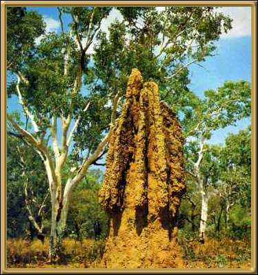

Photographer: Jerry Haberer
You'll find these scattered all around the Territory. Some of them are 4-5 metres high (14-16 feet). Apparently the way they are built keeps them cool, and the environment stable. They are certainly very impressive!